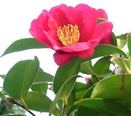
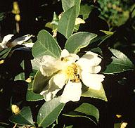
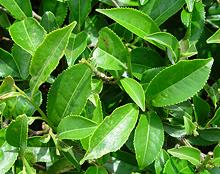

SAFARI
Users
Christmas Camellia
 [Yuletide Camellia; Sazanka (Japan); Camellia sasanqua]
Native to northern China and Japan, this Camellia was introduced
to Europe in 1869, and soon taken to North America. In the West, it is
primarily a decorative, but in Japan it was grown for practical purposes.
The leaves were used to make tea, and in some parts of Japan it is still
so used, but also the seeds were pressed to make Tea Seed Oil for
cooking, lighting, lubrication and cosmetics.
Photo by KENPEI distributed under license Creative
Commons
Attribution-ShareAlike 3.0 Unported.
Tea Oil Camellia
 [Oil Seed Camellia; Camellia oleifera]
This large shrub or small tree (up to 20 feet tall) is in widespread
cultivation in China, and from its seeds is pressed the dominant cooking
oil of Hunan province and other southern regions. It is an excellent
oil for all culinary uses, being at least 68% monounsaturated oil, with
saturated oils higher than polyunsaturated oils - similar to olive oil.
It is high in vitamin E and other antioxidants, and has a high smoke
point, 485°F/252°C. Caution: this oil may be labeled
"Tea Oil" but is better labeled "Tea Seed Oil" to clarify that it is not
toxic "Tea Tree Oil" from the Paperback Melaleuca (Melaleuca
alternifolia), used as a medicinal and as a minor component in some
soaps. Tea seed oil is also used in soap manufacturing.
Photo from U.S. National Arboretum = public domain
.
Tea Camellia
 [Camellia sinensis]
This tree, native to East Asia and Southeast Asia can grow to over 50 feet high, but for tea production it is kept pruned to less than 6 feet so the new leaves are accessible. There are two major varieties, C. sinensis var. sinensis, which predominates in most of China, and the larger leaved C. sinensis var. assamica (Assam Tea) which dominates in Assam and Darjeeling in India, and in the far south of China. The plant was acquired by the British, by means fair or foul, and planted in India to avoid paying the Chinese so much money for tea. It is now grown in subtropical and tropical regions around the world, but the two top producers, by far, are China and India. Photo by AxelBoldt contributed to the public domain .
C. sinensis is also used to produce Tea Seed Oil, but not to nearly the extent of C. oleifera. A number of different teas are made from this plant, depending on picking and processing. In general, the smaller the leaves when picked, the better the quality of the tea, and the higher the altitude where the plants are grown, the slower they develop, also resulting in better quality tea.
Tea is generally steeped for a short time in water no hotter than 185°F/85°C for just a few minutes. The lower temperature and short steeping time prevent tannins from being extracted which would make the brew bitter. Tea leaves can hold up for 3 to 5 infusions depending on type and quality. This is not the case in Africa and the Near East where bitter tea is preferred, and loaded with sugar and other adulterants. This provides the tea growing regions a ready market for inferior grades of tea and dust from processing.
White Tea:
This tea is made from very young leaves still covered with white hairs. The leaves are withered, then quickly dried to prevent any further changes. The tea brewed from it is a light yellow and thought to be very healthy, including anti-cancer properties.Green Tea:
This tea is made by a very brief process. Leaves are wilted and immediately sun dried, roasted or steamed to stop enzyme processes and oxidation, preserving the green color and natural nutritional compounds.Yellow Tea:
This tea is made by a process similar to Green Tea, but dried more slowly so the leaves yellow. The taste is somewhat different from either white or green tea.Oolong Tea:
[wulong] This tea is first subjected to withering under intense sun, then allowed to oxidize under the influence of Polyphenol oxidase, an enzyme contained within the leaves. The leaves are rolled up into cylinders or beads. Oolong teas vary greatly by location, cultivar and processing. Oxidation may be from 8% to 85%, greatly affecting flavor. This is a preferred tea of conoisseurs in China.Black Tea:
[Red Tea in China] This tea is first wilted, then rolled and chopped by hand or mechanical methods. It is then oxidized under controlled temperature and humidity until it is almost completely oxidized under the influence of Polyphenol oxidase, an enzyme contained within the leaves. It is then dried, graded by size and packaged.Fermented Tea:
[Black Tea in China] After the oxidizing process described above, this tea is actually microbially fermented in a process similar to composting, mainly by Aspergillus niger. If a controlled atmosphere is available fermentation can be much quicker and more reliable than under primitive conditions. It is then pressed into various shapes and aged, sometimes for many years, to develop flavor, but experts say it should not be aged more than 100 years. Fermented teas are very popular in Tibet and Central Asia.Pu-erh Tea:
This is the best known of the fermented teas. It is made in southern China, always from the larger leaf var assamica which dominates in the south.Twig Tea:
[Kukicha, Böcha] This tea is made from twigs and stems, usually as green tea but sometimes with more oxidation. It is steeped at 155° to 180°F (70° to 80°C) supporting three to four infusions; 40 / 14 / 30 seconds. It is noted for a mildly nutty flavor and a very low caffeine level. It is the favored tea of the Michio Kushi Macrobiotics folks.